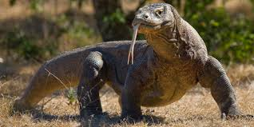
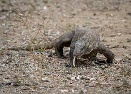

Komodo dragons were first recorded in 1912 by Pieter Anthonis Ouwens. They mainly live in Eastern Indonesia and on the island of Komodo. They are well known for being the largest species of lizard. Komodo dragons are also apex predators, meaning they have no natural predators.
Komodo dragon's diet mainly consists of birds and mammals. However, they have been known to attack and eat humans. They mainly eat carcasses but are known to wait and ambush prey. Their hunting strategy is mostly in groups and are rarely seen hunting alone.
  Wikipedia Britannica